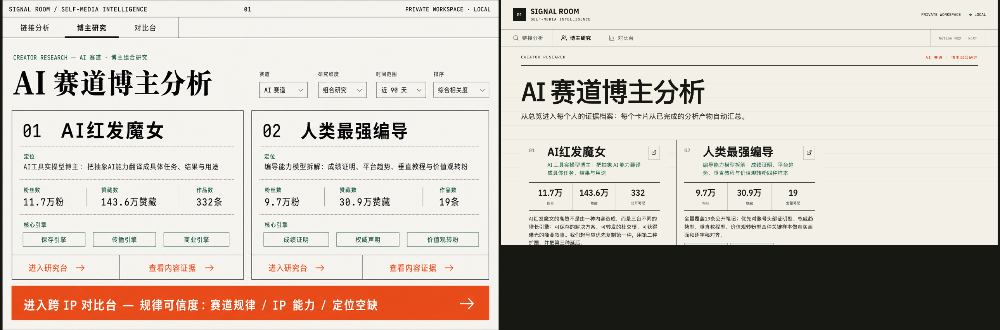
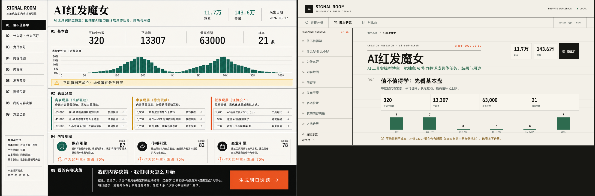
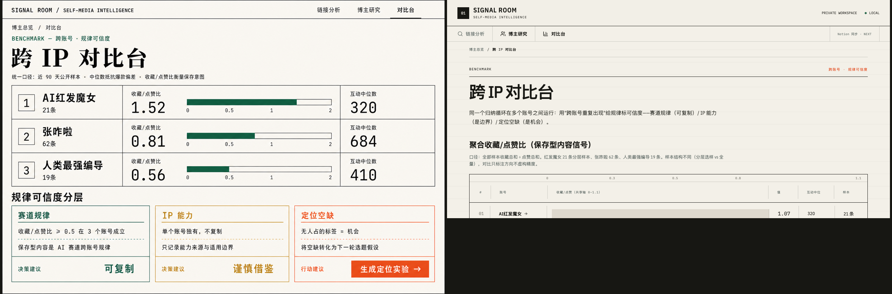
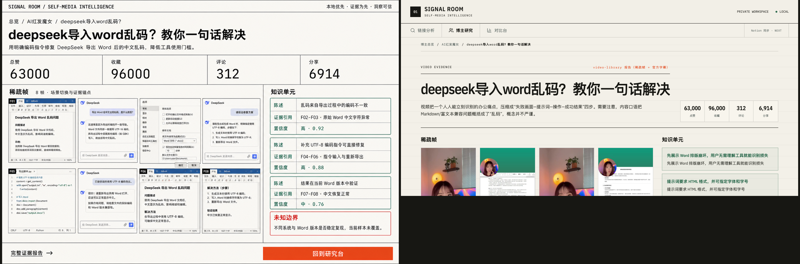

设计方向图（v2，已冻结）实际实现（viewport 截图）




判断权在 Owner：实际截图是首屏 viewport（页面可滚动），设计图是整页示意——对比看方向/密度/层级是否一致。批注请写"第 N 组 + 位置 + 问题"。




判断权在 Owner：实际截图是首屏 viewport（页面可滚动），设计图是整页示意——对比看方向/密度/层级是否一致。批注请写"第 N 组 + 位置 + 问题"。